울프 게임즈 v1.0
술자리 게임 모음 · 설치 안내
🤖 안드로이드에 설치하기 약 2분
※ 그림은 설명을 위해 단순하게 그린 화면입니다. 휴대폰 제조사(삼성·LG 등)와 안드로이드 버전에 따라 문구나 위치가 조금 다를 수 있어요. 그림 속 빨간 번호는 누르는 순서예요.
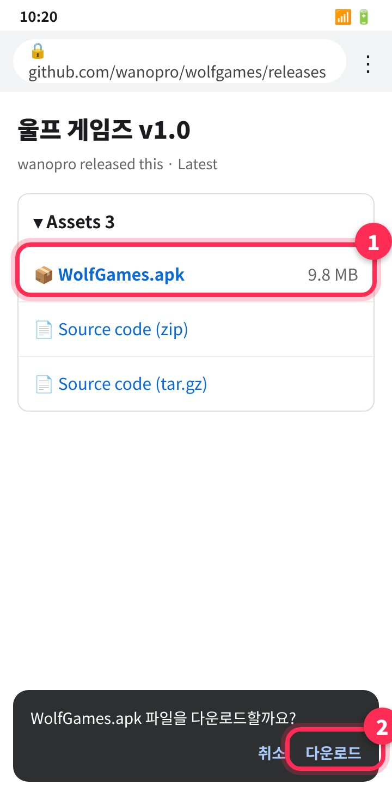
1단계APK 다운로드
위의 QR 코드를 카메라로 찍거나 APK 다운로드 버튼을 누르세요. GitHub 페이지가 열리면 WolfGames.apk를 눌러도 됩니다.
- "파일을 다운로드할까요?"가 나오면 다운로드
- "유해할 수 있는 파일" 경고가 나와도 다운로드를 누르면 돼요.
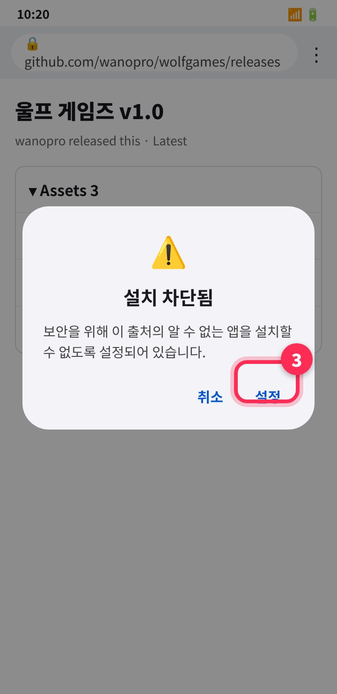
2단계다운로드한 파일 열기 → 설정
다운로드가 끝나면 알림이나 화면 아래쪽의 열기를 누르세요. 처음이라면 "보안을 위해 … 설치할 수 없도록 설정되어 있습니다" 창이 떠요.
- 설정을 누르세요.
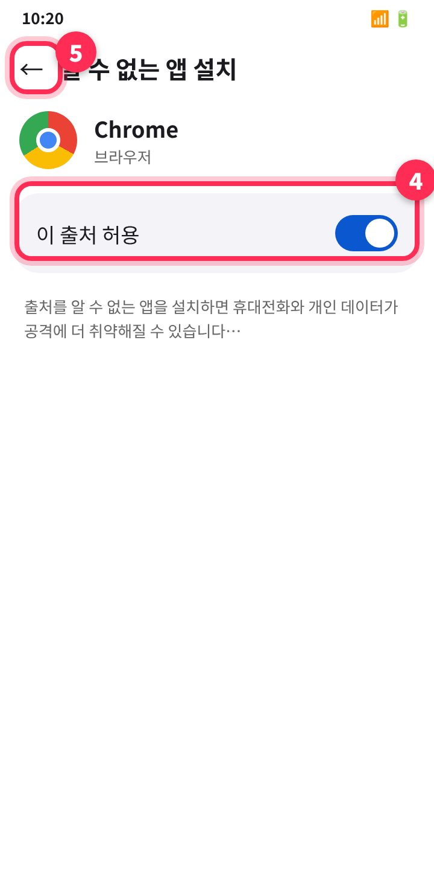
3단계"이 출처 허용" 켜기 → 뒤로
알 수 없는 앱 설치 화면에서 이 출처 허용 스위치를 켜세요. 그다음 왼쪽 위 ←(뒤로)를 누르면 설치 화면으로 돌아갑니다.
- 삼성 휴대폰은 "이 출처에서 앱 설치 허용"으로 나올 수 있어요.
- 설정 창이 자동으로 안 뜨면 설정 → 애플리케이션 → (오른쪽 위 ⋮) 특별한 접근 → 알 수 없는 앱 설치 → Chrome에서 켜세요.
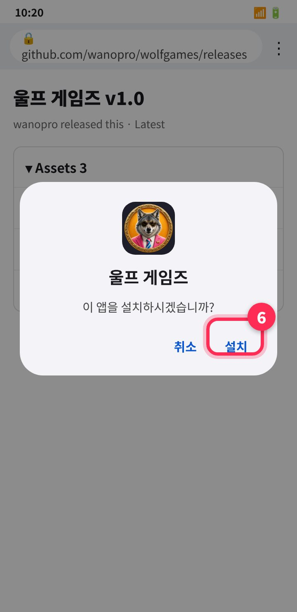
4단계설치
"이 앱을 설치하시겠습니까?"에서 설치를 누르세요.
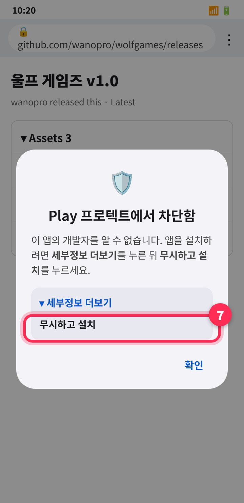
5단계Play 프로텍트 경고가 나오면 (나올 때만)
플레이스토어에 등록되지 않은 앱이라서 "Play 프로텍트에서 차단함 / 알 수 없는 개발자" 경고가 나올 수 있어요.
- 세부정보 더보기 → 무시하고 설치를 누르세요.
- "앱 검사를 위해 보낼까요?"가 나오면 보내지 않음을 눌러도 괜찮아요.
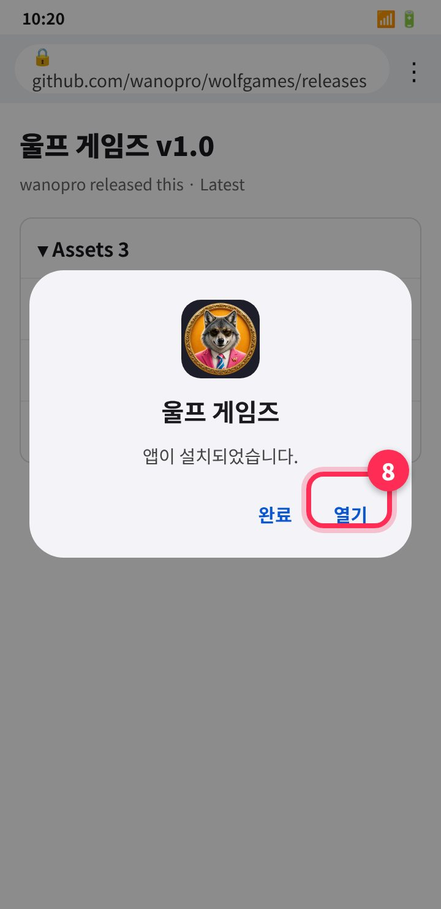
6단계완료! 열기
열기를 누르면 바로 시작돼요. 홈 화면이나 앱 목록에 선글라스 낀 늑대 아이콘 "울프 게임즈"가 생깁니다.
- 보안이 걱정되면 설치 후 3번 화면에서 이 출처 허용을 다시 꺼도 돼요. 이미 설치된 앱은 그대로 쓸 수 있습니다.
🍎 아이폰에서 아이콘 만들기 약 30초
※ 그림은 설명을 위해 단순하게 그린 화면입니다. iOS 버전에 따라 버튼 위치가 조금 다를 수 있어요. 그림 속 빨간 번호는 누르는 순서예요.
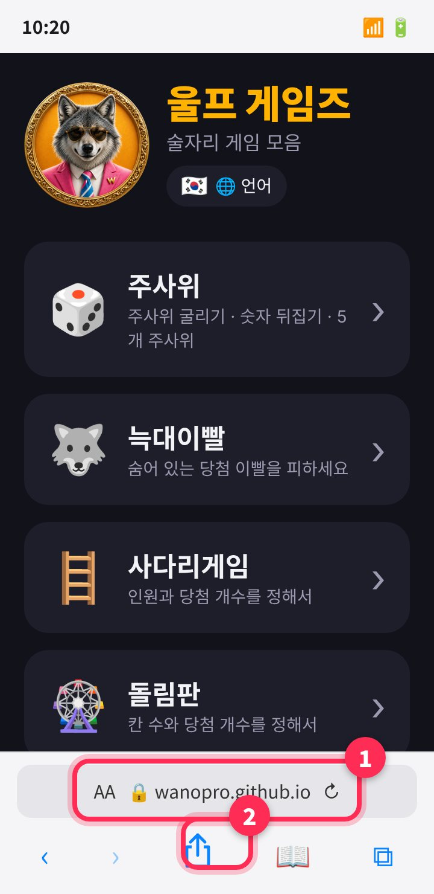
1단계사파리로 접속 → 공유 버튼
카메라로 위의 웹 QR 코드를 찍거나 사파리 주소창에 wanopro.github.io/wolfgames를 입력하세요.
- 페이지가 열리면 화면 아래쪽(또는 주소창 옆)의 공유 ⬆︎ 버튼을 누르세요.
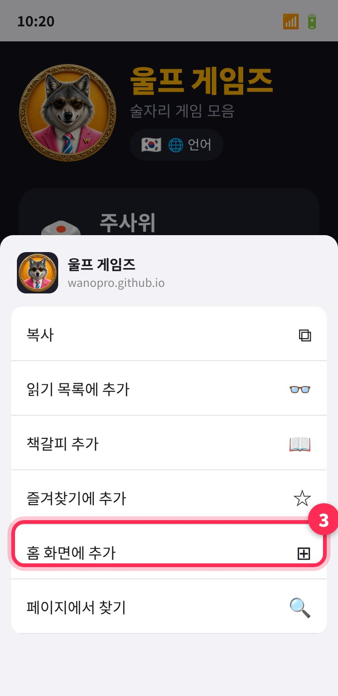
2단계"홈 화면에 추가"
공유 메뉴를 위로 조금 올리면 홈 화면에 추가 ⊞가 보여요. 눌러주세요.
- 안 보이면 메뉴 맨 아래 "작업 편집…"에서 추가할 수 있어요.
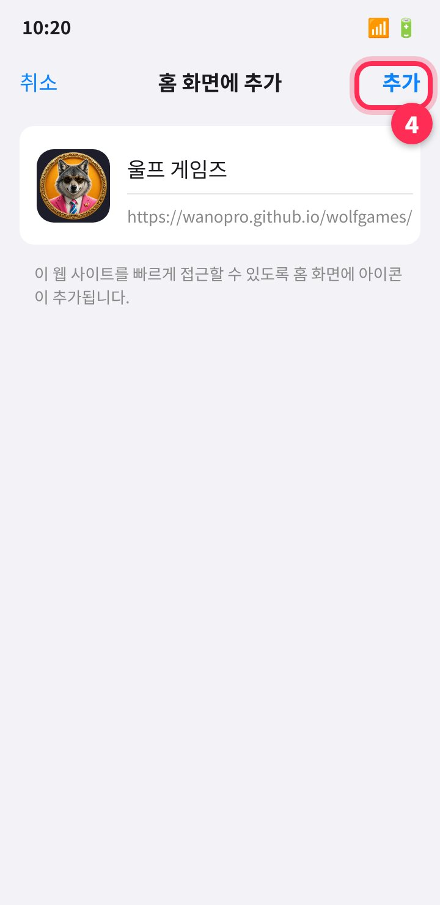
3단계오른쪽 위 "추가"
이름이 울프 게임즈로 들어가 있어요. 오른쪽 위 추가를 누르세요.
- "웹 앱으로 열기" 스위치가 보이면 켜둔 채로 추가하세요.
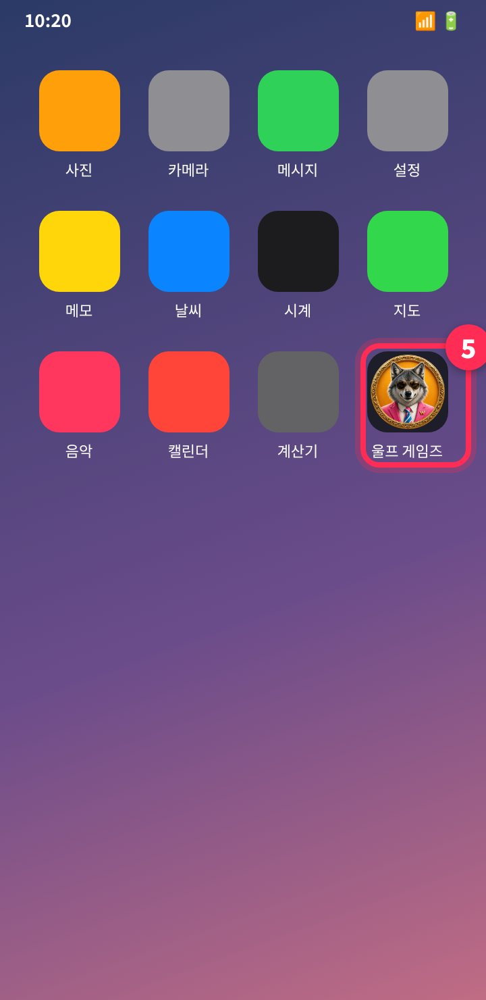
4단계홈 화면의 늑대 아이콘으로 실행
홈 화면에 울프 게임즈 아이콘이 생겼어요. 누르면 주소창 없이 앱처럼 열립니다.
- 한 번 열어두면 인터넷이 약한 곳에서도 실행돼요.
- 아이폰은 웹에서 진동을 지원하지 않아 진동 없이 화면 효과만 나와요.
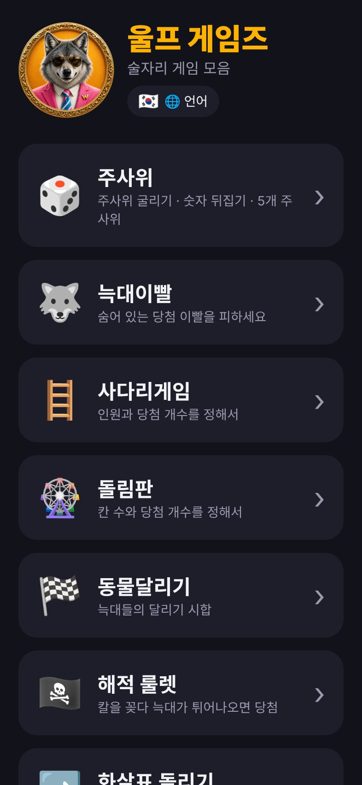
🎮 메인 화면
주사위(3종), 늑대이빨, 사다리게임, 돌림판, 동물달리기, 해적 룰렛, 화살표 돌리기, 4목을 즐길 수 있어요.
- 로고 옆 🌐 언어: 한국어·English·日本語·简体中文·ไทย·Tiếng Việt
- 맨 아래에서 버전(v1.0)을 확인할 수 있어요.
🔄 업데이트
안드로이드: 같은 QR이나 같은 버튼으로 새 APK를 받아 설치하면 됩니다. 기존 앱을 지우지 않고 덮어 설치돼요.
아이폰·웹: 따로 할 것 없이, 인터넷이 될 때 열면 자동으로 최신 버전이 됩니다.
❓ 자주 묻는 질문
"패키지를 파싱하는 중 문제" 또는 "앱이 설치되지 않았습니다"가 나와요
다운로드가 중간에 끊긴 경우가 많아요. 다운로드 폴더의 WolfGames.apk를 지우고 다시 받아보세요. 안드로이드 8.0 이상에서 설치할 수 있어요.
설정 버튼을 눌렀는데 "이 출처 허용"이 안 보여요
설정 → 애플리케이션 → ⋮ → 특별한 접근 → 알 수 없는 앱 설치에서 파일을 받은 앱(Chrome, 삼성 인터넷, 내 파일 등)을 골라 켜세요.
이 앱 안전한가요? 권한이 필요한가요?
울프 게임즈는 진동 외에 다른 권한을 쓰지 않아요. 인터넷, 연락처, 사진, 위치에 접근하지 않습니다. 경고는 플레이스토어에 등록되지 않은 앱이면 공통으로 나오는 안내예요.
아이폰에서 홈 화면에 추가가 안 보여요
카카오톡이나 크롬 안의 브라우저로 열린 경우에는 메뉴가 없을 수 있어요. 오른쪽 아래 사파리로 열기를 눌러 사파리에서 다시 열어주세요.
진동이 안 와요
아이폰(웹)은 진동이 지원되지 않아요. 안드로이드 앱인데 진동이 없다면 휴대폰이 무음/방해 금지 모드인지 확인해 주세요.